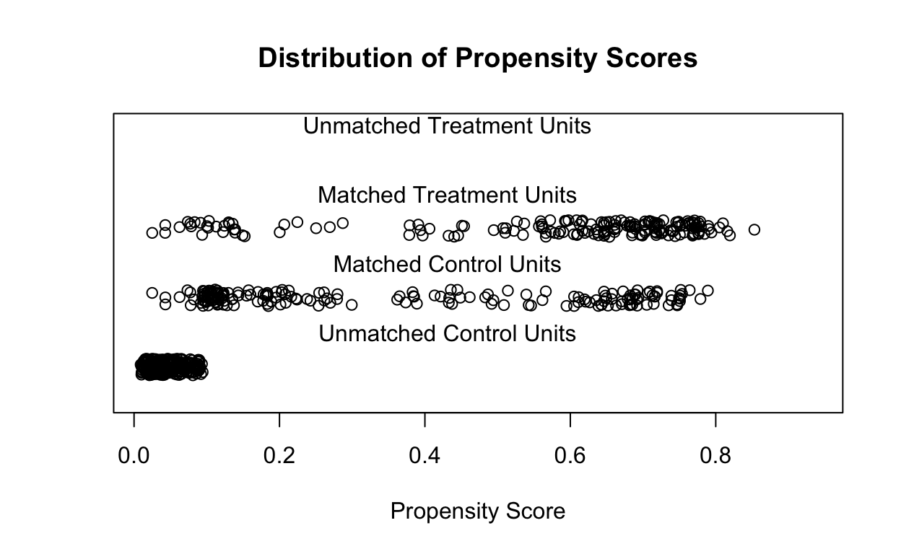
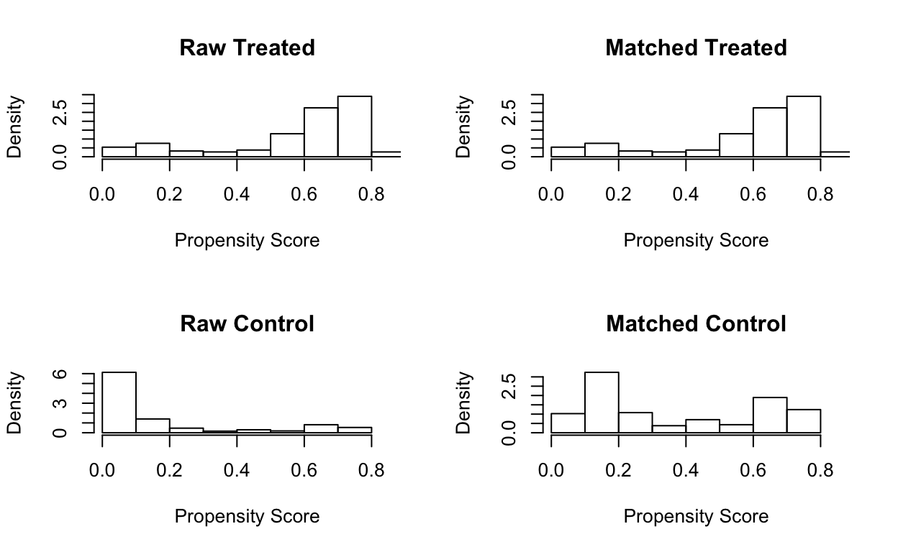
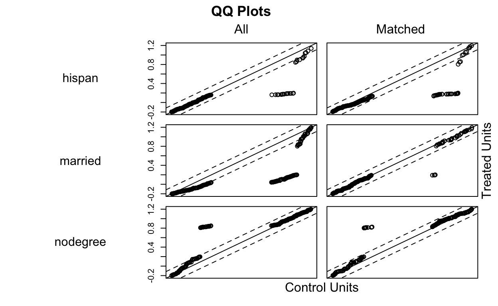
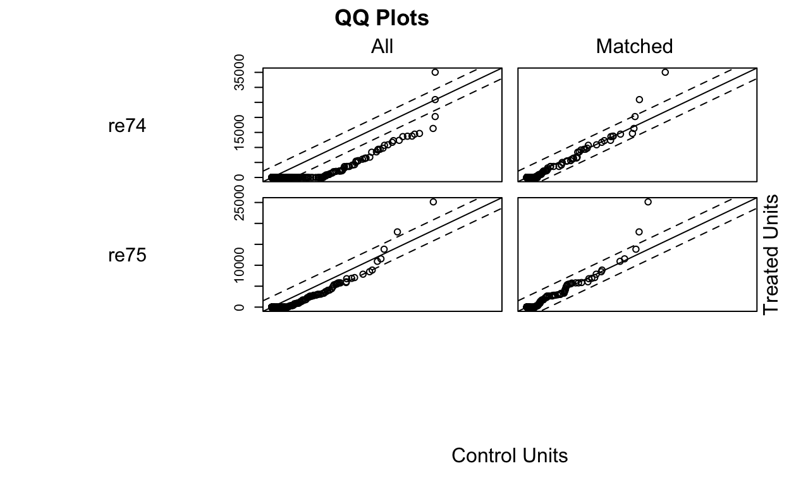
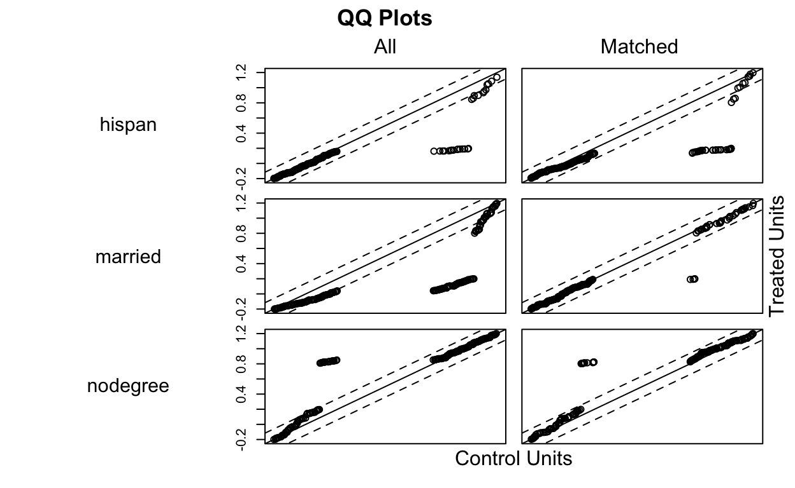
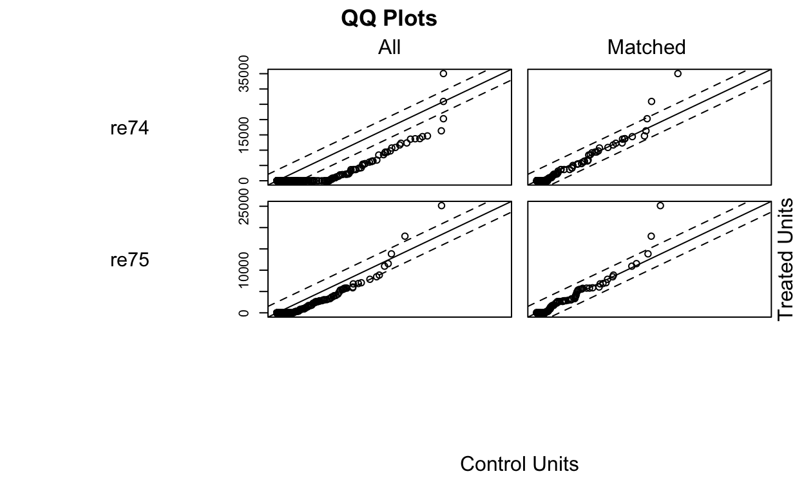

Overview
Welcome to HDAT9700 Statistical Modelling II Propensity Score Matching!
This chapter focuses on the challenge of drawing causal inferences from observational data.
Previously, you learned about randomised control trials (RCTs), and different approaches to randomisation, including simple, block and stratified randomisation. RCTs are the gold standard design for estimating causal effects: because treatment assignment is under the researchers’ control, it is possible to balance the characteristics of treated and untreated individuals, therefore any difference in their outcomes can be ascribed to the effect of the treatment or intervention.
When analysing observational data, treatment assignment is no longer under the researchers control. As a result, treated and untreated individuals may differ in ways related to the outcome, therefore it is not straightforward to ascribe differences in the outcome to the treatment.
In this chapter we will explore matching as a general approach used to improve causal inferences from observational data. In broad terms, matching is a preprocessing technique that relies on pruning or duplicating observations so that the treated and untreated groups are similar in terms of their background characteristics.
At the end of this chapter you will be able to
- Understand the challenges of drawing causal inferences from observational data
- Discuss the assumptions needed to estimate causal effects from observational data
- Implement various approaches to matching using the R package
MatchIt
The reference text for this chapter is “Matching as Nonparametric Preprocessing for Reducing Model Dependence in Parametric Causal Inference” by Daniel Ho, Kosuke Imai, Gary King and Elizabeth Stuart, available here. This chapter also draws heavily on the work of Miguel Hernán and colleagues—references are provided at the end of the chapter.
So let’s get started!!
What is causal inference?
The models that we fit as data scientists perform different functions and allow us to answer different questions. Statistical modeling tasks have been classified into three categories:
- Description
- Prediction
- Causal inference
Descriptive models can answer questions such as what are the characteristics of children who participate in an early childhood program?
Predictive models can answer questions such as what is the probability of on-track development following participation in an early childhood program?
Causal models can answer questions such as does participation in an early childhood program improve children’s development, on average?
Causal inference is the science of posing and answering causal questions, “questions which predict certain features of the world if the world had been different” (Hernán et al 2018)
There are many frameworks for assessing causality, some of which you covered in HDAT9200 Statistical foundations for health data science. Classical frameworks include the Bradford Hill Criteria and Rothman’s sufficient-component cause model.
In this chapter we approach causal inference from the counterfactual framework. This approach lends itself to more formalised discussion and identification of causal effects. The literature on counterfactual theory pays scant lip service to classical epidemiological frameworks such as the Bradford Hill criteria, but nonetheless these are still relevant and useful.
Aside
As a reminder, the Bradford Hill Criteria are listed below.
- Strength (effect size)
- Consistency (reproducibility)
- Specificity
- Temporality
- Biological gradient
- Plausibility
- Coherence
- Experiment
- Analogy
Spurious correlations
We are all familiar with the old adage that correlation does not imply causation. Spurious correlations abound:
Number of films Nicolas Cage appeared in correlates with Number of people who drowned by falling into a swimming-pool \(\rho=0.67\)
Reproduced with permission from http://tylervigen.com
People who drowned after falling out of a fishing boat correlates with Marriage rate in Kentucky \(\rho=0.95\)
Reproduced with permission from http://tylervigen.com
Of course we know that correlation does not imply causation. Nonetheless:
- In the absence of confounding, observational estimates and causal estimates are the same
- With observational data, we can still pose and answer causal questions (provided sufficient background information is present)
- Even RCTs can only provided measures of association—we are just more confident in interpreting these as causal because of the experimental design.
- Causal inferences from a rich observational dataset can be more reliable than those from a sub-par RCT (especially if the sample is small and treatment adherence is poor)
Counterfactual outcomes
Counterfactual outcomes refer to outcomes under alternative treatments or scenarios. These treatments may not have happened in real life so counterfactual outcomes are usually hypothetical!
An example
The table below gives an example of the development outcomes (On-track/vulnerable) we might observe for children, some of who attended an early childhood program:
| Child | Participated? | Outcome following non-participation | Outcome following participation |
|---|---|---|---|
| Anne | Yes | On-track | |
| Barry | No | On-track | |
| Katie | Yes | Vulnerable |
- For Anne and Katie, we only observe what happened given that they did participate in the program
- For Barry, we only observe what happened given that he did not participate
The counterfactual framework is based on the premise of knowing outcomes under both scenarios. This is a conceptual idea only: of course we can not observe the counterfactual, we must imagine we have the power to change history or to reverse time and rerun an experiment.
If this was possible we would observe the full data table:
| Child | Participated? | Outcome following non-participation | Outcome following participation |
|---|---|---|---|
| Anne | Yes | Vulnerable | On-track |
| Barry | No | On-track | On-track |
| Katie | Yes | Vulnerable | Vulnerable |
- In this table the counterfactuals are filled in
- We “observe” the outcome following non participation for Anne and Katie
- We “observe” the outcome following participation for Barry
Notation
In order to define a causal effect more rigorously, we need to introduce some notation.
Let \(A\) denote a dichotomous action, exposure or treatment. Let \(A\) take the value \(1\) if an individual receives the treatment and \(0\) if they are untreated. Note, we will assume dichotomous treatments thoughout this chapter, but treatments or interventions with multiple arms are of course possible.
Let \(Y_{a=1}\) denote the observed outcome for treatment \(A=1\), and \(Y_{a=0}\) denote the observed outcome for treatment \(A=0\) The outcomes \(Y_{a=0}\) and \(Y_{a=1}\) are referred to as counterfacutal outcomes. They are called counterfactual because one of the outcomes is under a treatment counter to what was actually observed. The term potential outcomes is also used, because Anne could potentially receive either treatment.
Let \(L\) denote a vector of observed pretreatment variables
To summarise, we have:
- \(A\) treatment indicator
- \(Y_{a=x}\) outcome under treatment \(x\)
- \(L\) vector pretreatment variables
A running example…
Let’s set up a running example.
Consider an early childhood intervention program Helping Hands. Helping Hands is designed to support vulnerable families with young children aged 0-4. The program includes tailored assistance from a trained staff member who can provide parenting training and help coordinate access to early childhood services including health and childcare services.
Answer the questions on causal effect notation below, with this example in mind.
Defining Causal Effects
Below is the table we saw earlier, relabelled with the notation we have just covered.
| Child | A | \(Y_{a=0}\) | \(Y_{a=1}\) |
|---|---|---|---|
| Anne | Yes | Vulnerable | On-track |
| Barry | No | On-track | On-track |
| Katie | Yes | Vulnerable | Vulnerable |
Individual causal effect
Focusing on the first child Anne, we see that \(Y_{a=0} = \text{Vulnerable}\), whereas \(Y_{a=1} = \text{On-track}\). This tells us that participation in Helping Hands had an causal effect on Anne’s development.
In general, an individual causal effect is present when counterfactual outcomes differ, i.e. \[ Y_{a=0} \ne Y_{a=1} \]
Discuss…
Is there an individual causal effect for Barry or Katie?
Population causal effect
In practice, we can’t examine individual causal effects. Instead we focus on population causal effects.
We define \(P(Y(1)=1)\) as the proportion of individuals experiencing the outcome \(Y\) if \(A=1\). And \(P(Y(0)=1)\) as the proportion of individuals experiencing the outcome \(Y\) if \(A=0\).
If these two proportions are different, the treatment \(A\) has a causal effect on \(Y\), i.e. \[ P(Y(0)=1) \ne P(Y(1)=1) \]Discuss…
Is there a population causal effect of helping hands on development in the table below?
| Child | A | \(Y_{a=0}\) | \(Y_{a=1}\) |
|---|---|---|---|
| Anne | Yes | Vulnerable | On-track |
| Barry | No | On-track | On-track |
| Katie | Yes | Vulnerable | Vulnerable |
| Mikey | No | Vulnerable | On-track |
| Nuffy | Yes | On-track | Vulnerable |
| Deirdre | Yes | Vulnerable | On-track |
| John | No | Vulnerable | Vulnerable |
| Betty | Yes | Vulnerable | Vulnerable |
| Oliver | No | On-track | On-track |
| Monica | No | On-track | On-track |
Discussions points
For the children listed in the table, 4/10 have on-track development if nobody participates in the program. If everybody particpates then 6/10 have on-track development.
So we have:
\(P(Y(0)=1)=0.4\)
\(P(Y(1)=1)=0.6\)
\(P(Y(0)=1) \ne P(Y(1)=1)\) therefore we can say there is a causal effect of program participation.
Causal effect measures
Causal effects can be measured on the additive or multiplicative scale:
Additive scale
\(P(Y(1)=1) - P(Y(0)=1)\)
Multiplicative scale
\(P(Y(1)=1)/P(Y(0)=1)\)
Discuss…
In the example above, what is the causal effect on (i) the additive scale and (ii) the multiplicative scale?
Quantities of interest
Having set up this framework for causal inference, it is possible to focus on different treatment effects by comparing outcomes among different populations. Two treatment effects of particular interest are
The Average Treatment Effect (ATE)
The ATE estimates the average effect of applying a treatment to the entire populationAverage Treatment effect among the Treated (ATT)
The ATT estimates the average effect of the treatment on those who actually received the treatment
These quantities are both valid, but may be more or less of interest depending on context. For example, if a treatment is very expensive and/or invasive, it is likely to be administered to targeted subgroups rather than whole populations, and therefore the ATT is of more interest. The ATE is more applicable in estimating the effect of broad-based interventions that are rolled out to whole populations.
Discuss…
Which effect (ATT or ATE) would be more relevant when evaluating an intervention like Helping Hands?
Can you think of an example where (i) the ATE and (ii) the ATT would be more relevant?
Randomisation
Randomised experiments were discussed in Chapter 1. Classical random experiments have three core characteristics:
1. Large \(N\)
2. Random selection of individuals from a population
3. Random assignment of individuals to a treatment
When these three characteristics are present, any background characteristics should be distributed equally among the untreated (\(A=0\)) and treated (\(A=1\)) individuals.
The problem with observational data
In an observational study, the characteristics of a population are observed but there is no intervention by the researcher. Examples of observational studies include cross-sectional, case-control and cohort studies.
When the researcher doesn’t have control over treatment assignment it becomes more difficult to identify causal effects. You will probably have a good intuitive sense of why this is the case…
Discussion
Consider…
…a cross-sectional study that gathered information in a community where some children participated in the Helping Hands program. Bivariate analysis showed that children who participated in Helping Hands had significantly lower child development scores at age five. Why would it be problematic to claim that Helping Hands had a causal effect on development from this data source?
Can you give another example of a scenario where causal claims from a cross-sectional dataset may be questionable?
Discussion points
In the first scenario, assignment to the treatment—participation in Helping Hands—is not under the researchers control. Because the data are observational, we are just observing what has already happened, and children who participated in Helping Hands may have different characteristics compared to those who do not. Crucially, these differing characteristics may also relate to child development. For example, Helping Hands participants might come from economically disadvantaged families, or families where there are drug or alcohol issues. The observed relationship between participation and development may be attributable to these other factors, therefore we can’t claim a causal effect of the program. What we can say is that Helping Hands participation is associated with lower development, which can be useful information depending on purpose of the modelling exercise (recall the different modelling aims discussed in Chapter 1, and the distinctions between describing, explaining and predicting).
A famous example where spurious causal claims were inferred from observation data is the Wakefield et al study, published in the Lancet in 1998. In this study, the authors linked gastrointestinal disease and developmental regression to the measles, mumps, and rubella (MMR) vaccination. These results fueled doubts about the safety of the vaccine, triggering a reduction in vaccination levels in several countries. However, the results were based on an uncontrolled analysis of 12 children, all of whom were selected for having both outcomes. The lancet fully retracted the paper in 2010. You can read more about this study, its flaws, and the subsequent fallout here.
The retracted Wakefield Study
Visualising causation versus association
The figure below captures the distinction between causal analyses and observational analyses.
To perform a causal analysis, we would like to replicate the situation where we compare outcomes for the entire population under treatment to the entire population under no treatment (i.e. compare counterfactual outcomes).
With observational data, what we actually compare is the subset of the population who got the treatment to the subset of the population that did not.
Observation versus causation (Adapted from Causal Inference (2018, Ch1) by Hernán and Robins)
It is still possible to make causal claims from observational data, under certain assumptions. Because these assumtions allow us to identify causal effects they are referred to as identifiability assumptions.
Practical 1
The MatchIt package
MatchIt is an R package which implements non-parametric pre-processing matching methods. The package has been developed by Daniel Ho, Kosuke Imai, Gary King and Elizabeth Stuart. Full documentation is available online or by typing help("MatchIt") in the R console.
MatchIt includes:
- Support for multiple sophisticated matching techniques
- Inbuilt procedures for assessing balance
- Integration with other R functionality
Getting started
The MatchIt package has already been installed in the learnr R environment. Remember to make sure it is loaded
library("MatchIt")The MatchIt package provides an example dataset named lalonde, containing a subset of data on The National Support Work Demonstration. This was a program based in the USA which aimed to support low-skilled workers to (re)enter the workforce. The dataset includes information on treated and untreated individuals, a range of background characteristics (including earnings before the intervention), and an outcome: earnings two years after the intervention.
More information on this dataset can be found in the original paper LaLonde (1986) Evaluating the Econometric Evaluations of Training Programs with Experimental Data
Take some time to explore the data below, answering the following questions:
- How many observations are there?
- How many treated and untreated individuals are there? (the variable treat is the treatment indicator)
- What background characteristics are available?
- Are there any obvious differences between treated and untreated individuals?
- How does the outcome differ between treated and untreated individuals? (the variable re78 is the outcome—earnings two years after the program)
str(lalonde)Dicussion
What can we say about the data?
There are some striking differences between the demographic characteristics of the treated and untreated groups. What are the implications when trying to evaluate the effectiveness of the program? (Bear in mind the cultural context—USA in the mid 1970s)
Identifiability assumptions
In order to make causal claims from observational data we must make some assumptions about the data, particularly with respect to the treatment or ‘action’ \(A\), the outcome \(Y\) and any relevant pretreatment variables \(L\).
Assumptions
The three identifiability assumptions are:
1. Positivity
2. Exchangeability
3. Consistency
Positivity
The assumption of positivity states that the conditional probability of receiving every possible treatment value must be positive, i.e. \(\gt0\).
What this means is that there can not exist a category \(l\) of a confounder \(L\) where the probability of receiving the treatment is zero. Mathematically, we can write \[ Pr(A=a|L=l)>0 \; \text{for all treatments} \; a \; \text{and for all categories} \; l \epsilon L \]Discuss
An implication of the positivity assumption is that there can’t be a treatment \(A\) and a category \(l \epsilon L\) where \(Pr(A=a|L=l)=1\). Why?
What would be the implication if children of young mothers (\(\le19\) years) were always entered into the Helping Hands program?
Discussion points
To see why this is the case it is easiest to think in terms of a dichotomous treatment (0 or 1). If \(Pr(A=1|l)=1\) then \(Pr(A=0|l)=0\), and positivity does not hold.
If children of young mothers were always entered into the Helping Hands program then \(Pr(A=1|age\le19)=1\) and \(Pr(A=0|age\le19)=1\). Positivity does not hold. In simple terms, this is a problem because we can’t estimate the effect of the program in the whole population because there is no comparison for children of young mothers.
Exchangeability
Exchangeability means that the conditional probability of receiving the treatment depends only on the measured covariates. In other words, treatment assignment can’t be related to the outcome \(Y\), either directly, or indirectly through an unobserved confounder.
In a randomised controlled trial, exchangeability is achieved through the random assignment of individuals to treatment groups. Given a sufficiently large trial, this process balances the background characteristics of the treated and untreated groups. Because these characteristics are balanced it doesn’t matter which group actually gets the treatment in an experimental design, i.e. the treatment groups are exchangeable and hence the term exchangeability.
Mathematically, we can express this relationship as \[ \tilde{p}(L|A=0)=\tilde{p}(L|A=1) \] where \(\tilde{p}(.)\) denotes the observed empirical density of the data.
Exchangeability is much trickier when dealing with observational data. As discussed previously, when treatments aren’t randomly assigned there may be self-selection or other mechanisms that result in treated and untreated groups being different in ways that relate to the outcome being measured. The second half of this tutorial focusses on pre-processing techniques which can be applied to observational datasets to help avoid this situation and achieve the necessary balance.
We can never know for sure whether the assumption of exchangeability holds—there is no formal test. In practice, we must justify why we believe that departures from the assumption are not too severe, i.e. that we are close enough. For exchangeabilty to hold, all relevant pretreatment variables should be present in \(L\). This requires:
- Domain knowledge
- A theoretical model
- A well-thought out research design
Domain knowledge is needed to understand what factors are important for the causal question at hand, i.e. those that relate to treatment status and to the outcome of interest.
A theoretical model is important to clarify what the researcher considers important and to distinguish from other variables that might be associated with the outcome but are not confounders. Graphical methods to describe theoretical models, such as Directed Acyclic Graphs (DAGs), are popular, but beyond the scope of this chapter.
A well-thought out research design is essential to make sure that the relevant factors, or proxies for them, are available. For example, we can’t control for a potential confounder such as maternal age if it hasn’t been recorded or linked from another source.
Consistency
Consistency assumes that there is a single well-defined version of the treatment. It is also referred to as the no-multiple-versions-of-treatment assumption. So for example, we can not estimate the causal effect of participation in the helping hands program if some families only receive parenting classes and some families only receive home visits.
Of course, there is some wiggle-room here: even in a gold-standard intervention study some variation in treatment is unavoidable for practical reasons. In the example of Helping Hands, the same parenting class might be delivered by different instructors in different parts of the state. It is up to the researcher to decide what degree of variability in the treatment is permissable.
Lack of consistency is problematic because it
- Makes it difficult to assess exchangeability and positivity
- Makes it unclear what the practical policy intervention should be
Does obesity shorten life?
In a short article discussing the importance of consistency, Hernán and Taubman (2008) pose the question Does obesity shorten life?
Obesity is usually defined as BMI \(\ge\) 30. In answering this question, we can consider the alternative to the “treatment” of obesity to be “not obsese” (BMI \(\lt\) 30). However, the author’s argue that obesity is not a well-defined treatment, because there are multiple ways to achieve the alternative to the implicit treatment of obesity, e.g.
- Diet
- Exercise
- Surgery
Thus, comparing obese and non-obese individuals in an observational study translates to a poorly-defined causal question: the implicit intervention is unclear because it is unknown what “treatment” obese individuals received to become obese.
A helpful thought experiment when estimating causal effects from observational data is to ask what hypothetical RCT you are emulating with your analysis (no matter how unethical or impractical that RCT might be). In the example of obesity and mortality, this would force us to ask what is the treatment? We would then need to consider how would we operationalise the “treatment” of obesity, leading us to more well-defined causal questions, i.e. the effect of diet, the effect of exercise, the effect of surgery etc.
Matching
Overview
Matching is a preprocessing step which aims to balance the pre-treatment variables \(L\) between the treated and untreated groups. This balance is achieved by dropping, duplicating, or weighting observations. The aim is to improve the assumption of exchangeability (which is achieved through randomisation in the case of a randomised control trial). Matching strengthens our ability to say that associations observed in the data are causal.
The key advantage of matching is that analyses of matched data reduce the dependency on model assumptions, in particular, parametric assumptions regarding the relationship between control variables and the outcome. This is important because equally valid statistical models can exhibit high degrees of model dependency, i.e. an estimated treatment effect can vary depending on the parametric form of the model chosen by the researcher.
A simple and intuitive form of matching is 1:1 exact matching:
- Each treated unit is matched to a single control unit within the observational dataset
- The observed confounders are matched exactly
- e.g. each treated child \(i\) with covariates \(L_{i}=(l_{1},l_{2},l_{3})\) is matched to an untreated child \(j\) with the same covariate vector \(L_{j}=(l_{1},l_{2},l_{3})\).
Discuss
What are the potential disadvantages of, and barriers to, 1:1 exact matching?
Discussion points
- Usually there are fewer treated than untreated units, so 1:1 matching may discard a lot of records;
- It may not be possible to get exact matches, especially if there are many covariates and/or limited potential controls
Matching workflow
Analysing observational data using matching is a multi-stage process. The first stage—matching—is a pre-processing step.
The task of matching can be iterative: the analyst can, and should, try different matching approaches in order to optimise the balance in \(L\) variables between the treated and untreated groups.
In the final stage, the analysis of substantive interest is performed using the matched data. This multi-stage, iterative workflow is depicted below.
Workflow when matching
Analysing matched data
The analysis of the matched data could be as simple as comparing the difference in means for the outcome of interest in the treated and untreated groups. However, such a simple analysis will only be appropriate in the case of a 1:1 exact matching.
A better approach is to model the outcome of interest using an appropriate parametric model, including the \(L\) covariates as controls (with appropriate functional forms e.g. quadratic terms etc). Using the confounding \(L\) variables in both the matching and analysis stages makes the analysis doubly robust. This means that inferences will be valid if either (i) the matching stage or (ii) the parametric model is correct.
Matching methods
Overview
In many practical situations, exact matching is not possible. For example:
- There are too many covariates to match on all variables at the same time
- There are too few observations to find an exact match for each treated individual
Alternative matching methods can be grouped into two classes:
- Distance-based Matching
- Coarsened Exact Matching
Distance-based Matching
Distance-based matching relies on some quantitative measure of the similarity/dissimilarity between observed individuals. Two individuals \(i\) and \(j\) are candidates for matching if the distance between them is suitably small, i.e. if \(D(i,j) \lt \delta\). The advantage of distance-based measures is that they reduce a large set of variables into a single univariate metric.
- The value \(\delta\), which determines eligible matches, is chosen by the analyst. This parameter is often referred to as the calipers.
- Matches can be made at different ratios of treated to control, e.g. 1:1, 1:2 etc
Two distance metrics commonly used in practice are:
- The Mahalanobis distance
- The propensity score
The Mahalanobis distance
The Mahalanobis distance measures the average distance between two multivariate vectors \(X_{i}\) and \(X_{j}\) as
\[ M(X_{i}, X_{j}) = \sqrt{(X_{i}, X_{j})'S^{-1}(X_{i}, X_{j})} \] where \(S\) is the sample covariance matrix of \(X\). Note that this is analogous to the more familiar standardised difference in means \(d=\frac{\bar{x_{i}}-\bar{x_{j}}}{\sigma}\) (i.e. difference in means divided by the standard deviation).
Aside
The Mahalanobis distance measure was proposed by the Indian scientist and statistician Prasanta Chandra Mahalanobis (1893-1972) in the 1920s. The measure was used to compare individuals from Bengal castes based on multivariate anthropometric data, including skull measurements.
Maybe that’s why the term calipers is used?
The propensity score
The propensity score refers to the probability of receiving the treatment \(A\). In some settings, such as RCTs, the propensity score might be known and chosen in advance (e.g. people in group A receive the treatment with probability \(p=0.5\)). With observational data, the true propensity score is unknown and must be estimated from the available data. In practice, this is typically done using a logistic regression of the dichotomous treatment indicator \(A\) on the observed confounders \(L\). This gives a model of the form
\[ \text{log} \left(\frac{1-\pi_{i}}{\pi_{i} }\right) = \beta X_{i} \] where \(\pi_{i} = \text{Pr}(A_{i}=1)\). Given the model parameter estimates \(\hat{\beta}\), the estimate of the propensity score \(\hat{\pi_{i}}\) is \[ \hat{\pi_{i}} = \left(e^{-\hat{\beta} X_{i}} + 1\right)^{-1} \]
The distance-based on the propensity score for two individuals is then simply \(\pi_{i}-\pi_{j}\). It is also possible to base the differences on the log scale, i.e. \(\beta X_{i}-\beta X_{j}\)
Utilising the propensity score
Matching is not the only way to utilise propensity scores to aid causal inference. Other applications include:
Stratification
Under stratification, the full sample is divided into a small number of strata (e.g. 5-10) based on the propensity score. The causal effect is then estimated seperately within each strata.
Weighting
Under weighting, the full sample is reweighted to balance the propensity score between the treated and untreated subgroups.
Criticism of propensity score matching
Propensity score matching is a very popular approach in practice, but has been subject to criticism, for example King and Nielson (2016) Why Propensity Scores should not be used for matching
These criticisms stem from the fact that, once balance is achieved on the global propensity score, the matching process ignores local information on the individual covariates in \(L\). Thus, any pruning that takes place is random. Consequently, matching based on the propensity score approximates a completely randomised experiment, whereas other methods approximate a more efficient fully blocked experiment.
Discussion
Consider…
…the following (very) simplified example:
Using data on child and family background, you could use a logistic regression to estimate the probability of being involved in the Helping Hands program, conditional on child and family characteristics.
Based on the estimated model parameters, you find the following probabilities for Bruce (who ultimately did partake in the program) and Sheila (who did not partake in the program). \[ \begin{aligned} \hat{\pi}_{Bruce} & = 0.715 & \\ \hat{\pi}_{Sheila} & = 0.725 & \end{aligned} \]
Based on these estimated propensity scores, matching Bruce with Sheila seems like good candidate match. Sheila, who was untreated, can supply the counterfactual for Bruce, who was treated.
Suppose you dig deeper on the children’s background characteristics (their \(L\) values). We find the following:
Bruce
- Maternal age = 17
- Parental income = medium
Sheila
- Maternal age = 32
- Parental income = low
Clearly the two children have different background characteristics for the covariates Maternal age and Parental income.
Checking the estimated model coefficients, you confirm your suspicions: Bruce has a relatively high propensity score because he was born to a young mum; Sheila has a relatively high propensity score because she is from a low-income family.
Are the two children really a good match?
Coarsened Exact Matching
Coarsened Exact Matching (CEM) works differently than matches based on distance metrics. There are three steps:
- The \(L\) variables, on which the matches are based, are grouped, or coarsened. For example age measured in years might be coarsened to five-year age groups.
- Individuals with the same value of the coarsened variables are grouped together in the same stratum.
- Control units in each stratum are weighted to equal the number of treated units.
Practical 2
Matching using MatchIt
The matchit function contained in the MatchIt package implements a wide variety of matching procedures.
The basic syntax (noting many more options are available) is as follows:
matchit(formula, data, method = "nearest", distance = "logit", ratio=1, discard = "none")formula specifies the \(A\) and \(L\) variables, and takes the usual R formula syntax, e.g. A ~ l1 + l2 + ... + ln
data refers to the dataset containing the treatment indicator \(A\) and the pre-treatment covariates \(L\)
method refers to the matching method. The default is ‘nearest’ i.e. nearest neighbour matching
distance refers to the distance metric. The default ‘logit’ bases the distance on the propensity score estimated using logistic regression
ratio refers to the number of untreated units matched to each treated unit. The default is 1
discard allows the user to prune observations outside the region of common support before matching begins
The example below matches treated and untreated units based on the variables black (an indicator for African-American status) and re74 (income in 1974). The matching method is 1:1 nearest neghbour matching, based on the propensity score.
match1 <- matchit(treat ~ black + re74, data=lalonde,
method = "nearest", distance = "logit", ratio=1, discard = "none")
match1##
## Call:
## matchit(formula = treat ~ black + re74, data = lalonde, method = "nearest",
## distance = "logit", discard = "none", ratio = 1)
##
## Sample sizes:
## Control Treated
## All 429 185
## Matched 185 185
## Unmatched 244 0
## Discarded 0 0- Note there is one matched control unit (n=185) for each treated unit (n=185)
- 244 units are unmatched
Try it yourself
Adapt the above code to implement 2:1 nearest neighbour matching based on the propensity score
match2 <- matchit( )- How many matched and control units are there?
Adapt the above code to implement exact matching based on the variable age. (Note that exact matching in MatchIt includes all valid matches, so it is not possible to choose a ratio)
match3 <- matchit( )Assessing balance
Because exact matching is rarely possible in practice, it is expected that there will be some imbalance in the \(L\) covariates comparing the matched treated and untreated groups. The analyst must assess the degree of balance achieved by different matching approaches, and attempt to optimise the balance.
Ideally, we would like to ensure that the multivariate distribution of \(L\) is the same in the treated and untreated groups. Because \(L\) typically contains many individual variables, this is often infeasible in practice. A practical alternative is to compare the \(L\) variables at lower dimensions, i.e. univariate or bivariate comparisons between the treated and untreated groups.
Balance is solely a property of the observed data, not some broader population. Therefore, hypothesis testing, or statistical significance tests are neither necessary nor relevant (Ho et al 2007).
Common Support
Part of achieving balance is ensuring that the \(L\) covariates in the matched treated and untreated groups have an overlapping distribution. This region of the data is referred to as common support. Including observations outside the common support is problematic as it requires extrapolation, and therefore model dependence. Common support is achieved by pruning observations where the \(L\) covariates do not overlap. Common support should be assessed for individual variables. In practice, common support is often assessed solely on the propensity score, which contains information on all \(L\) variables. This may not be a good idea, however, for the reasons discussed previously.
The figure below presents a hypothetical example comparing the distribution of a continuous pretreatment variable for treated and untreated groups.
- The area of common support is 20-35
- Observations <20 and >35 should be pruned
- The matching process should balance the distribution within the area of common support, i.e. by weighting up lower values (20-25) and weighting down heigher values (30-35) in the treated group.
Illustration of common support
Discussion
- Can you give a hypothetical example of how common support would be broken in an analsis of the effectiveness of the Helping Hands program?
- Draw a picture depicting zero common support for a continuous variable.
- What identifiability assumption has this broken?
Bias-variance trade-off
As with many statistical techniques, there is a trade-off between bias and variance in the task of balancing treated and untreated groups. Pruning observations:
- Increases balance
- Reduces sample size
- Bias \(\downarrow\) Variance \(\uparrow\)
Practical 3
Assessing balance
The purpose of matching data prior to analysis is to balance the \(L\) covariates between treated and control groups. Greater balance makes the assumption of exchangeability more plausible, which strengthens any causal inferences made from observational data. An important part of the process is therefore assessing how well the matching approach has done at balancing the covariates. MatchIt includes several diagnostics to help assess balance, including numerical summaries and visualisations.
Remember
- It is ok to try multiple matching techniques to achieve balance
- The outcome \(Y\) should never be used when matching
Numerical summaries
Calling the summary() function on the output of matchit returns a comparison of the means of the matched variables in treated and untreated gorups, for the raw data and for the matched data. An example is shown below:
match4 <- matchit(treat ~ age + educ + black + hispan + married + nodegree + re74 + re75, data=lalonde, method = "nearest")
summary(match4)##
## Call:
## matchit(formula = treat ~ age + educ + black + hispan + married +
## nodegree + re74 + re75, data = lalonde, method = "nearest")
##
## Summary of balance for all data:
## Means Treated Means Control SD Control Mean Diff eQQ Med eQQ Mean
## distance 0.5774 0.1822 0.2295 0.3952 0.5176 0.3955
## age 25.8162 28.0303 10.7867 -2.2141 1.0000 3.2649
## educ 10.3459 10.2354 2.8552 0.1105 1.0000 0.7027
## black 0.8432 0.2028 0.4026 0.6404 1.0000 0.6432
## hispan 0.0595 0.1422 0.3497 -0.0827 0.0000 0.0811
## married 0.1892 0.5128 0.5004 -0.3236 0.0000 0.3243
## nodegree 0.7081 0.5967 0.4911 0.1114 0.0000 0.1135
## re74 2095.5737 5619.2365 6788.7508 -3523.6628 2425.5720 3620.9240
## re75 1532.0553 2466.4844 3291.9962 -934.4291 981.0968 1060.6582
## eQQ Max
## distance 0.5966
## age 10.0000
## educ 4.0000
## black 1.0000
## hispan 1.0000
## married 1.0000
## nodegree 1.0000
## re74 9216.5000
## re75 6795.0100
##
##
## Summary of balance for matched data:
## Means Treated Means Control SD Control Mean Diff eQQ Med eQQ Mean
## distance 0.5774 0.3629 0.2533 0.2145 0.1646 0.2146
## age 25.8162 25.3027 10.5864 0.5135 3.0000 3.3892
## educ 10.3459 10.6054 2.6582 -0.2595 0.0000 0.4541
## black 0.8432 0.4703 0.5005 0.3730 0.0000 0.3730
## hispan 0.0595 0.2162 0.4128 -0.1568 0.0000 0.1568
## married 0.1892 0.2108 0.4090 -0.0216 0.0000 0.0216
## nodegree 0.7081 0.6378 0.4819 0.0703 0.0000 0.0703
## re74 2095.5737 2342.1076 4238.9757 -246.5339 131.2709 545.1182
## re75 1532.0553 1614.7451 2632.3533 -82.6898 152.1774 349.5371
## eQQ Max
## distance 0.4492
## age 9.0000
## educ 3.0000
## black 1.0000
## hispan 1.0000
## married 1.0000
## nodegree 1.0000
## re74 13121.7500
## re75 11365.7100
##
## Percent Balance Improvement:
## Mean Diff. eQQ Med eQQ Mean eQQ Max
## distance 45.7140 68.1921 45.7536 24.7011
## age 76.8070 -200.0000 -3.8079 10.0000
## educ -134.7737 100.0000 35.3846 25.0000
## black 41.7636 100.0000 42.0168 0.0000
## hispan -89.4761 0.0000 -93.3333 0.0000
## married 93.3191 0.0000 93.3333 0.0000
## nodegree 36.9046 0.0000 38.0952 0.0000
## re74 93.0035 94.5880 84.9453 -42.3724
## re75 91.1508 84.4891 67.0453 -67.2655
##
## Sample sizes:
## Control Treated
## All 429 185
## Matched 185 185
## Unmatched 244 0
## Discarded 0 0Examining the above output we can see that the matching step has improved the balance of \(L\) variables in the treated and untreated groups. For example:
- In the raw data, treated individuals were younger on average compared to untreated individuals (25.8 years versus 28.0 years)
- In the matched data, the treated and untreated individuals had a similar age on average (25.8 years versus 25.3 years)
The data still aren’t perfectly matched however. For example, in the matched data the proportion of black individuals is higher in the treated group (84%) than the untreated group (47%).
Graphical summaries
MatchIt provides three main graphical summaries:
- Jitter plot plots the distribution of the propensity scores in the treated and untreated groups
- Histogram plots histograms of the propensity score for the treated and untreated groups
- Q-Q plot plots quantile-quantile plots for the individual \(L\) variables
These diagnostic graphs are accessed by calling the plot() on the output of matchit, and specifying the appropriate type argument:
plot(match4, type="jitter")
plot(match4, type="hist")
plot(match4, type="QQ")Jitter plot
Example code and output for the jitter plot graphical diagnostic are shown below.
match4 <- matchit(treat ~ age + educ + black + hispan + married + nodegree + re74 + re75, data=lalonde, method = "nearest")
plot(match4, type="jitter")
## [1] "To identify the units, use first mouse button; to stop, use second."## integer(0)- There is common support for the propensity score for the matched treated and control units between 0 and 0.8 (approx)
Histogram
Example code and output for the histogram graphical diagnostic are shown below.
match4 <- matchit(treat ~ age + educ + black + hispan + married + nodegree + re74 + re75, data=lalonde, method = "nearest")
plot(match4, type="hist")
- The propensity score is more balanced in the matched data than in the raw data
Quantile-Quantile (Q-Q) plot
Example code and output for the Q-Q graphical diagnostic are shown below.
match4 <- matchit(treat ~ age + educ + black + hispan + married + nodegree + re74 + re75, data=lalonde, method = "nearest")
plot(match4, type="QQ") 

- Q-Q plots plot the quantiles of the treated and untreated units in the raw data and the matched data
- When variables are balanced the data points will lie on the 45 degree line (\(y=x\))
Try it yourself
Use the code blocks below to match the lalonde data on all available variables according to the following specifications:
- Nearest neighbour propensity score matching (2:1 ratio)
- Optimal matching based on the Mahalanobis distance (2:1 ratio)
- Coarsened exact matching
Examine the balance diagnostics. Which approach achieves the best balance?
# Nearest neighbour propensity score matching (2:1 ratio)
match5 <- matchit( )
summary(match5)# Nearest neighbour propensity score matching (2:1 ratio)
match5 <- matchit(treat ~ age + educ + black + hispan + married + nodegree + re74 + re75, data=lalonde, method = "nearest", distance = "logit", ratio = 2)
summary(match5)# Optimal matching based on the Mahalanobis distance (2:1 ratio)
match6 <- matchit( )
summary(match6)# Optimal matching based on the mahalanobis distance (2:1 ratio)
match6 <- matchit(treat ~ age + educ + black + hispan + married + nodegree + re74 + re75, data=lalonde, method = "optimal", distance = "mahalanobis", ratio = 2)
summary(match6)# Coarsened exact matching
# use method = "cem"
match7 <- matchit( )
summary(match7)# Coarsened exact matching
match7 <- matchit(treat ~ age + educ + black + hispan + married + nodegree + re74 + re75, data=lalonde, method = "cem")
summary(match7)Practical 4
Analysing matched data
Once the optimal balance in \(L\) variables has been achieved, the final step is to compare the outcome(s) of interest for the matched treated and control groups. To do this we have to be able to access the matched data generated by matchit. This is done using the function match.data.
# Nearest neighbour propensity score matching (2:1 ratio)
match5 <- matchit(treat ~ age + educ + black + hispan + married + nodegree + re74 + re75, data=lalonde, method = "nearest", distance = "logit", ratio = 2)
# Optimal matching based on the Mahalanobis distance (2:1 ratio)
match6 <- matchit(treat ~ age + educ + black + hispan + married + nodegree + re74 + re75, data=lalonde, method = "optimal", distance = "mahalanobis", ratio = 2)
# Coarsened exact matching (2:1 ratio)
match7 <- matchit(treat ~ age + educ + black + hispan + married + nodegree + re74 + re75, data=lalonde, method = "cem")For example, we can extract the matched data from the match #5, as follows.
# Save the matched data from matching attempt #5
match5.data <- match.data(match5)
head(match5.data)Note that there are two new variables in the matched dataset:
- distance The distance metric—in this case the propensity score
- weights A set of weights which balances the matched treated and control units, where necessary.
MatchItweights the control units to match the treated units, thus estimates applying the weights return the Average Treatment Effect on the Treated (ATT). Unmatched units are given a weight of 0 (and do not appear in the file). All matched treated units are given a weight of 1. Each matched control unit is given a weight proportional to the number of treated units to which it was matched. The control weights add up to give the number of uniquely matched control units.
Once the data have been saved, we can use a simple OLS to gauge the effect of matching on the outcome of interest. Recall, the outcome is the variable re78: earnings (in US$) two years after the program.
Complete the code below to save the matched data from the matching approaches 5-7, and to compare the simple OLS regression re78 ~ treat in the raw data and in each matched dataset.
# Save the matched data
match5.data <- match.data(match5)
match6.data <-
match7.data <-
# Fit an ols model to the raw data and the alternative sets of matched data
mod0 <- lm(re78 ~ treat, data=lalonde)
mod5 <- lm(re78 ~ treat, data=match5.data, weight=weights)
mod6 <-
mod7 <-
summary(mod0)
summary( )
summary( )
summary( )Interpretation
- In the model based on the raw data (mod0), the average annual earnings are $6984, and program participation decreases annual earnings by $635 on average.
- In the models based on the matched data, the estimated effect of program participation is positive—a more intuitive result
- $220 based on the nearest neighbour matching with the propensity score distance
- $230 based on optimal matching with the Mahalanobis distance
- $415 based on coarsened exact matching
References
“Matching as Nonparametric Preprocessing for Reducing Model Dependence in Parametric Causal Inference” by Daniel Ho, Kosuke Imai, Gary King and Elizabeth Stuart, Political Analysis (2007) 15:199–236 Available here.
“MatchIt: Nonparametric Preprocessing for Parametric Causal Inference” by Daniel E. Ho, Kosuke Imai, Gary King and Elizabeth A. Stuart, Journal of Statistical Software (2011) 42(8), 1-28. Available here
“Causal Inference” by Miguel A. Hernán, James M. Robins, Boca Raton: Chapman & Hall/CRC (forthcoming) available here
“Data science is science’s second chance to get causal inference right. A classification of data science tasks” by Miguel A. Hernán John Hsu and Brian Healy (Preprint version) Available here
“Does obesity shorten life? The importance of well-defined interventions to answer causal questions” by MA Hernán amd SL Taubman, International Journal of Obesity (2008) volume 32, pages S8–S14 Available here